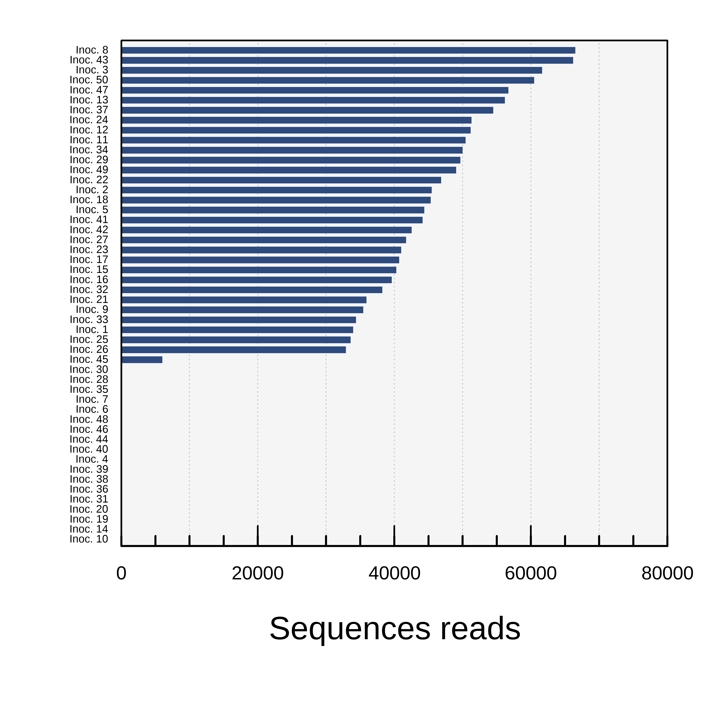

### Assuming we are in the main (Parent) directory of the project
prefetch --option-file ./DATA/SRRs.txt -O Reads/
mkdir fastq_files
cd fastq_files
for i in ../Reads/*/*.sra ; do fasterq-dump $i; done
cd ..Response of Lonicera maackii to soil chemistry and fungal communities.
This project aims at disentangling the relative contribution of soil physico-chemistry and fungal communities in driving Lonicera maackii performance. In 2019, we sampled 50 soil inocula, from 5 distinct sites, and grew Lonicera maackii in these inocula in a growth chamber, for 12 weeks.
We measured shoot dry mass, root length and average diameter, and root fungal colonization as response variables.
In parallel, for each inoculum, we measured soil physico-chemistry and extracted DNA from ~250mg soil to characterize fungal community structure using Illumina MiSeq technology (PE250bp), with amplicons targeting the ITS2 region (primers = gITS7 [fwd] and ITS4 [rev]). Data are provided as follows:
Soil properties, fungal root colonization and Lonicera performance are all included in the file lonicera.txt. Lonicera growth data is averaged for pseudo-replicates belonging to the same inoculum, but raw data for all pseudo-replicates separately are available in raw.growth.txt.
Soil fungal community structure can be found in the file comm.txt, where row names are inocula ID and number within each cell are the number of reads found in each inoculum for the corresponding column (fungal sequence variant). The 7-levels taxonomy, under the form of a table with rows corresponding to columns in
comm.txtis provided in thetaxa.txt. We also provide raw sequence files within the sequence read archives (SRA) under theBioProject # PRJNA1049398. The SRR numbers associated with all samples can be found in our file SRRs.txt
METADATA
Below are found metadata for each individual data file. All files are organized in a tabular format, so we explain in the metadata the meaning of all column titles, and relevant information as to how that particular piece of information was collected in the project.
File 1: comm.txt
| Column title | Explanation | Notes |
|---|---|---|
| ASV1, ASV2, ASV… | Amplicon sequence variants (i.e., unique non-chimeric sequences identified in the study) | The content of each cell represents the number of sequence reads found for each of these fungal taxa (ASVs) in each corresponding soil inoculum (rows). |
In this file, only samples with at least 5000 reads are kept for downstream analyses, ending up in keeping 32 samples out of our 50 samples overall.
File 2: lonicera.txt
| Column title | Explanation | Notes |
|---|---|---|
| Site | The site at which the inoculum (row) has been collected. | Inocula have been collected in 5 sites (5 sites \(\times\) 10 inocula per site = 50 inocula overall). All these sites were forested areas with different histories, times since Lonicera invasion and dominant canopy species. |
| Inoculum | Unique soil inoculum used in the experiment | Consisted of raw live (i.e., unsterilized) soil. |
| masse.tige | Dry shoot mass (g) | Measured by harvesting Lonicera aboveground biomass after 12 weeks of growth in the inoculum, and drying at 65C to constant weight. |
| l.racines | Total root length (m) | Measured by washing roots free of soil, and scanning them on a flatbed scanner. Root length was estimated using WinRhizo |
| diam.racines | Average root diameter (mm) | Based on root images acquired as described above, average diameter was estimated by WinRhizo |
| arb | Arbuscules colonization frequency (%) | Based on the gridline intersect method of McGonigle et al. (1990), we estimated the frequency of root colonization by Arum-type arbuscules, after staining in ink-vineagar (5% v/v) |
| coils | Coils colonization frequency (%) | These were differentiated from arbuscules by the visible presence of interwoven hyphae (as opposed to a dichotomous branching pattern for Arum-type arbuscule). |
| ves | Vesicles colonization frequency (%) | Again with the gridline intersect method, colonization frequency of roots by arbuscular mycorrhizal (AM) vesicles was estimated |
| nonmyc | Non-mycorrhizal structure colonizaiton frequency (%) | Any fungal (or Oomycota) structure that could be clearly established to be non-AM fungal, or not belonging to a dark septate endophyte (see below), was recorded in this category. This includes regularly septate hyphae but not thick melanized hyphae appearing as DSE, and structures looking like Olpidium chlamydospores, or oomycete oospores… |
| dse | Dark septate endophytes root colonization frequency (%) | In this category were included fungal structure with relatively large hyphal diameter, regular septation, melanized brown appearance and a clear diagnostic feature was the presence of either linear chains, or tufts of microsclerotia. Recognizing that some dark septate endophytes can also stain heavily with ink (and not appear as brownish melanized hyphae), our estimate is not intended to be a clear guild-level colonization estimate, but rather a morphology/appearance-based estimation of different categories of non-AM fungal structures, along with “nonmyc”. |
| pH | soil pH | Measured in a 1:2 mixture ratio (v/v) with distilled water |
| ammonium | NH4-N | Estimated by colorimetry following an extraction from soil using 2N KCl |
| nitrate | NO3-N | Estimated by colorimetry following an extraction from soil using 2N KCl |
| phosphore | orthophosphates | Estimated using a Mehlich-III extraction and a colorimetric test (Murphy-Riley approach with blue molybdate complex) |
| wsa | Water-stable aggregates (%) | Percentage of 250 \(\mu\textrm{m}\) - 1mm aggregates stable to water immersion cycles as tested in a Yoder’s apparatus. |
| mo | % Organic matter | Percent organic matter estimated as loss on ignition at 350°C |
File 3: taxa.txt
| Column title | Explanation | Notes |
|---|---|---|
| Kingdom | Kingdom | The Kingdom to which all fungal ASVs (rows) belong. ASVs are placed in the same order (rows) as columns in comm.txt. |
| Phylum | Phylum | The phylum to which the ASV belongs. NA means the naive Bayesian classifier was not able to confidently assign a value for that particular level. |
| Class | Class | The class to which the ASV belongs. NA means the naive Bayesian classifier was not able to confidently assign a value for that particular level. |
| Order | Order | The Order to which the ASV belongs. NA means the naive Bayesian classifier was not able to confidently assign a value for that particular level. |
| Family | Family | The Family to which the ASV belongs. NA means the naive Bayesian classifier was not able to confidently assign a value for that particular level. |
| Genus | Genus | The Genus to which the ASV belongs. NA means the naive Bayesian classifier was not able to confidently assign a value for that particular level. |
| Species | Species | The Species to which the ASV belongs. NA means the naive Bayesian classifier was not able to confidently assign a value for that particular level. |
Bioinformatics
All raw .fastq sequence files are available in the sequence read archives. To retrieve the files, simply use prefetch and fasterq-dump from the sra toolkit. More information available here. In our case, all SRRs required for download are grouped in the file SRRs.txt:
After that, the Reads folder can simply be removed, as all the fastqfiles are now in the current directory and ready for downstream dada2 analyses.
rm -r ReadsWe are then ready to move on with bioinformatic treatment of these sequences, once we have them in the directory named fastq_files. This is done using the R script dada2_bioinfo_script.R. What this does:
Code
library(dada2)
path <- "./fastq_files"
list.files(path)
thr=20
fnFs <- sort(list.files(path, pattern="_1.fastq", full.names = TRUE))
fnRs <- sort(list.files(path, pattern="_2.fastq", full.names = TRUE))
sample.names <- sapply(strsplit(basename(fnFs), "_"), `[`, 1)
filtFs <- file.path(path, "filtered", paste0(sample.names, "_F_filt.fastq.gz"))
filtRs <- file.path(path, "filtered", paste0(sample.names, "_R_filt.fastq.gz"))
names(filtFs) <- sample.names
names(filtRs) <- sample.names
out <- filterAndTrim(fnFs, filtFs, fnRs, filtRs,
truncLen=c(250,200),
trimLeft=c(19,20),
maxN=0,
truncQ=2,
compress=TRUE, multithread=thr)
errF <- learnErrors(filtFs, multithread=thr)
errR <- learnErrors(filtRs, multithread=thr)
dadaFs <- dada(filtFs, err=errF, multithread=thr)
dadaRs <- dada(filtRs, err=errR, multithread=thr)
mergers <- mergePairs(dadaFs, filtFs, dadaRs, filtRs, verbose=TRUE)
seqtab <- makeSequenceTable(mergers)
seqtab.nochim <- removeBimeraDenovo(seqtab, method="consensus", multithread=thr, verbose=TRUE)
getN <- function(x) sum(getUniques(x))
track <- cbind(out, sapply(dadaFs, getN), sapply(dadaRs, getN), sapply(mergers, getN), rowSums(seqtab.nochim))
colnames(track) <- c("input", "filtered", "denoisedF", "denoisedR", "merged", "nonchim")
rownames(track) <- sample.names
head(track)
write.table(track,"track.txt",row.names=F,col.names=F,sep="\t")
taxa <- assignTaxonomy(seqtab.nochim, "UNITE_9.0_2023-07-25.fasta", multithread=20)
save.image("OutputITS.RData")…
Dataset filtering
The object OutputITS.RData contains a ASVs \(\times\) samples table, with non-chimeric fungal sequences as columns and all study samples (and additional rows from another study also included in the MiSeq run in fact!) as rows. Unfortunately, sequencing depth was quite uneven among samples.
As a first filtering, we keep only the 50 samples relevant for our current Lonicera study:
Code
rm(list=ls())
load("OutputITS.RData")
### keep only the non-chimeric sequence table and the associated taxonomy for columns (fungal ASVs)
rm(list=setdiff(ls(),c("seqtab.nochim","taxa")))
### filter
x=seqtab.nochim
y=x[sapply(strsplit(rownames(x),"-"),'[',1)%in%1:50,]
### Store the community table (ASV x samples) in the object "comm" and clean up the environment
comm=y
rm(list=setdiff(ls(),c("comm","taxa")))
### save the environment
save.image("Lonicera_ITS.RData")Then, because several samples came out either with no reads, or very few (see below), we needed to filter out these samples:
Code
rm(list=ls())
load("Lonicera_ITS.RData")
library(showtext)
library(Hmisc)
showtext_auto()
par(family="raleway")
png("../figures/sequencing_depth.png",res=1200,units="in",height=3.5,width=3.5)
par(mar=c(4,3,1,1))
rownames(comm)=paste0("Inoc. ",sapply(strsplit(rownames(comm),"-"),'[',1))
x=barplot(rowSums(comm)[order(rowSums(comm))],width=.5,space=.5,horiz=T,yaxt="n",xaxt="n",xlim=c(0,80000),yaxs="i",col="#2E4B7F",border=NA,cex.axis=1,ylim=c(0,38))
rect(-10,-10,100000,100,col="grey96",border=NA)
abline(v=seq(0,100000,10000),lwd=.5,lty=3,col="grey80")
x=barplot(rowSums(comm)[order(rowSums(comm))],width=.5,space=.5,horiz=T,yaxt="n",xaxt="n",xlim=c(0,80000),yaxs="i",col="#2E4B7F",border=NA, add=T)
tt=rownames(comm)[order(rowSums(comm))]
axis(1,mgp=c(1.5,.02,0),cex.axis=7,lwd=.8,tck=.04)
minor.tick(nx=4,ny=1,tick.ratio=-.5)
text(x=1000,y=x,tt,pos=2,xpd=T,cex=4)
title(xlab="Sequences reads",mgp=c(1.5,.1,0),cex.lab=12)
box(lwd=.8)
dev.off()
Now (1) filtering samples with sufficient sequence reads, (2) rarefying at a fixed sequencing effort per sample and (3) removing fungal ASVs (columns):
rm(list=ls())
load("Lonicera_ITS.RData")
comm=comm[rowSums(comm)>5000,]
library(vegan)
comm=rrarefy(comm,32912)
temp=comm[,!colSums(comm)==0]
taxa=taxa[!colSums(comm)==0,]
comm=temp
save.image("Lonicera_ITS_rarefied.RData")